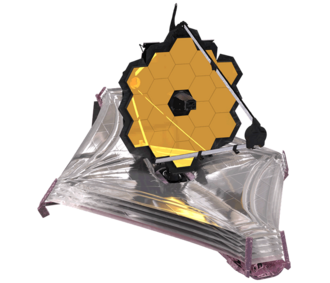

Mission Status: 1.5 Million KM from Earth. Ready to explore?
The James Webb Space Telescope is humanity's most advanced infrared observatory. By peering through cosmic dust, it reveals the earliest galaxies, the birth of stars, and the atmospheres of distant worlds. Select a module below to begin your mission.
The James Webb Space Telescope represents the pinnacle of decades of space engineering and international cooperation. Its scale and ambition required a series of technological breakthroughs to make its complex deployment and ultra-sensitive measurements possible. To observe the infrared light from the earliest, most distant stars and galaxies, it must maintain a temperature of under 50 Kelvin (-370°F), achieved only through its location at the Second Lagrange Point (L2) and a massive, passive cooling sunshield. Its sunshield, made of five layers of a specialized material called Kapton, is as thin as a human hair and coated with aluminum and silicon to deflect heat. It had to be folded precisely for launch and deployed in space with a complex sequence of hundreds of single point of failure steps. The complexity of its deployment was one of the most significant engineering challenges in history. The sheer ingenuity of its sunshield has been a focus of extensive technical review and admiration within the astronomical community.
Webb's mirror is a marvel of material science and technical alignment. The primary mirror of JWST is 6.5 meters (21.3 feet) in diameter, giving it a collecting area roughly six times larger than that of the Hubble Space Telescope. To fit inside a launch vehicle, the mirror was made of 18 hexagonal segments, which unfolded in space and can be actively aligned to act as a single, flawless mirror with nanometer precision. The primary mirror uses precise actuators to shape its segments into the correct geometry. Each segment is made of beryllium, a lightweight, strong, and exceptionally stable material across a wide range of temperatures making it an ideal choice for a cryogenic telescope. To enhance its ability to reflect infrared light, the mirror segments are coated with a layer of gold just 100 nanometers thick (about 1/1000th the thickness of a human hair) for optical excellence across the spectrum.
Peering from its stable orbit at L2, where it orbits the Sun in synchrony with Earth while staying well away from the Earth's thermal glow, Webb is a "Time Machine" unlike any before it. The detectors on JWST can detect light from objects formed shortly after the Big Bang, which has traveled across billions of years, stretching into infrared wavelengths due to the expansion of the universe a phenomenon known as cosmological redshift. Webb can peer through dense clouds of dust that obscure optical light to witness stellar nurseries in spectacular detail, revealing hidden "protostellar jets" and young stars that have been previously invisible to us. By observing the faint chemical fingerprints in the atmospheres of distant exoplanets as they transit in front of their parent stars, Webb is poised to revolutionize our understanding of planetary systems and perhaps provide clues to the existence of habitable environments beyond our solar system.
Earth (Launch)
Webb fires its thrusters for the first crucial trajectory correction toward its destination.
The massive, tennis-court-sized sunshield begins unfolding to cool the sensitive instruments.
The final golden side panels of the primary mirror lock into their permanent positions.
Webb safely inserts itself into its final halo orbit around the 2nd Lagrange point.
Lagrange Point 2 (1.5 Million km)
The James Webb Space Telescope's destination, Lagrange Point 2 (L2), is not just a random spot in space; it is an absolute necessity for the mission's survival and scientific success. Located roughly 1.5 million kilometers (about 1 million miles) from Earth, L2 is one of five unique points in our solar system where gravity creates a perfect cosmic parking spot.